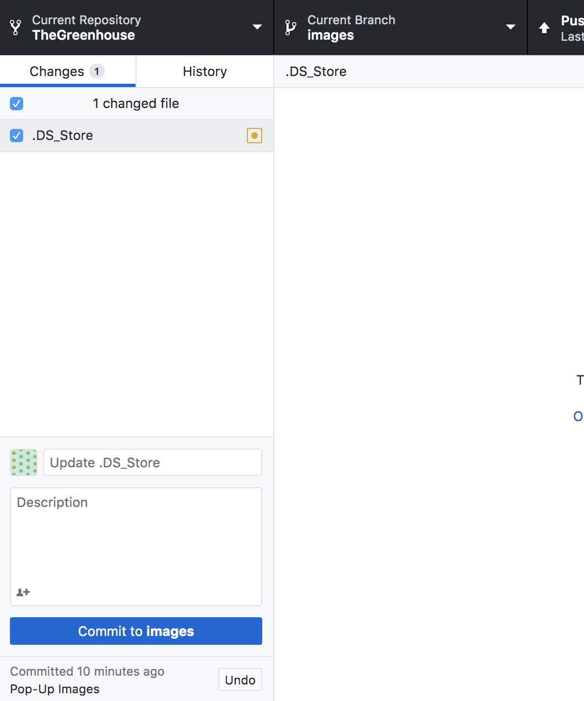
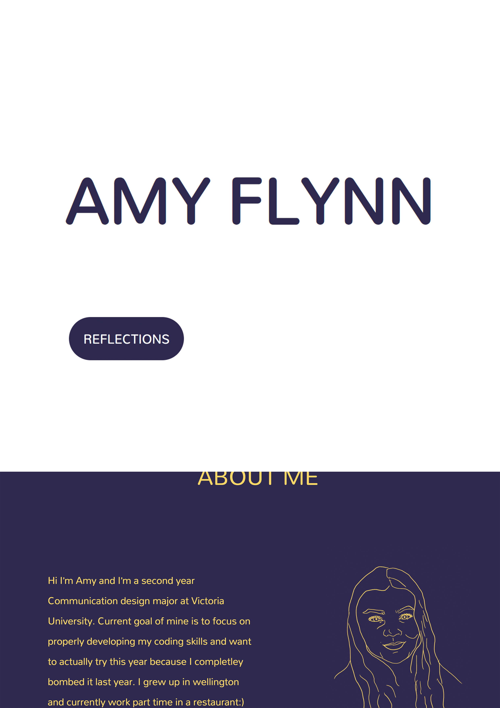

REFLECTION
July
Micro-Assignment
16/07/2020

For this exercise we were required to find a website and emulate it ourselves. I chose to emulate the basics of the website Sharesies. Overall, I really enjoyed this exercise and while initially daunting, I am happy with the result. It was satisfying to have a final website at the end and forced me to add elements in ways that may have not been the most efficient but gave me a better understanding of the languages and basics of creating a website. For me the most difficult aspects were positioning all of the separate elements on the page.
Tutorial 3
21/07/2020

We have started using GitHub for our projects so we can share our progress. GitHub is an especially useful resource when collaborating in groups over one project. The system distributes code through branches, having a central repository which then requires users to pull this code into their own repository before committing any final changes to the central repository. This is useful for a group of designers as you can easily track any changes you make and look back at previous commits to the repository.
Blog Beginning
21/07/2020

We have been introduced to the process of developing our blogs which requires us to create a wireframe. I have never wireframed before, so this is also new territory. I initially was unsure of how much detail to include and have since learned the difference between a block frame, wireframe and prototype. The block frame being an overview of the layout, the wireframe demonstrating the functionality, using minimal colour and the prototype expressing the full functionality and look of the final website. My wireframes are not exactly what a wireframe should be and I will most likely revisit them in the future. I believe while they are not perfect wireframes still provided a vital step in developing the blog and made it much simpler to visualize and then code.
Tutorial 4 & 5
28/07/2020

The most difficult aspect of the micro-assignment was positioning so it was very useful to go over the basics of this. In tutorial 5 we were required to then complete an assignment which uses flexbox. I struggled with this quite a lot however luckily, I had people around me to help therefore I got there in the end. Generally, I would get the boxes to move into the general area, however it was the refinement from the position and getting the further details when I struggled the most.
Learning Figma
30/07/2020
As part of a process of learning to wireframe, we were required to learn to use Figma. I really enjoyed using Figma to wireframe and found it had simple tools that were easy to navigate as a beginner but could be pushed further once I gathered a better understanding of the program. When designing my blog I decided on purple and yellow being complementary colours and colours I liked. I also included my layout of the homepage which included and Nav bar at the top to be able to go to and from the home and reflection page. I decided to include images of my artwork as I wanted to include images to introduce myself but don’t have any photos that would suit this element. As well as this I included an about me section which included a brief description of myself.
August
User Stories
04/08/2020
In tutorial 7 we covered more wireframing and user stories and have started making progress on Assignment 1. Even though I have looked at user stories I’m not sure how specific to be however will continue to work on this as I move through the assignment. As a big part of this assignment is wireframing we went over more wireframing. I am starting to feel more comfortable with figma however in terms of the principles of designing a website I still feel not entirely confident which is probably expected. I am deciding between what brief to choose from. While I currently can wrap my head around a plane booking system much more than the course selection, I feel there is more room to experiment in the university brief.
Tutorial 8
06/08/2020

I have decided to do assignment one on the university booking system and have started creating wireframes, while initially difficult to consider all the requirements I am having fun with different ways to make the system. I got to a point where there was not a lot of time left for how much work I had to do so had to get a kickstart. This also was to receive feedback in time before the due date so feel I have made good progress in the past few days. The feedback I received suggested shorter and more concise sentences to describe the interactivity, add annotations and more breathing room between text and elements. Overall this was very helpful information and I am glad I got enough done in time to receive feedback.
The Grid
06/08/2020
In tutorial 8 had another exercise based around the grid. I found this more difficult than the positioning exercise however can see the advantage having this knowledge would provide when coding a website. I managed to get through most of the exercises however once again was very grateful for the help of my peers in order to make progress on this exercise.
Assignment 1
11/08/2020
Today I handed in the first assignment. Overall I quite enjoyed this and felt happy with the final product and felt I managed my time well in the end which sometimes can be an issue for me. Last week I sent a final email asking for feedback which was a long shot as there was not a lot of time left and it was outside his office hours, however I did receive some good final notes. I made my wireframes take up the whole page and numbered my pages accordingly. I have included the progression of my wireframes and final sets for the hand in.
JavaScript
11/08/2020
In today’s class after handing in assignment one we had our first go at JavaScript for web development. The exercise required us to make an element change from one thing to another on command. I decided to try make a flower change colour. Unfortunately I did not manage to make mine work by the end of class and compared my code to my peers to troubleshoot however still struggled to make it work. I will hopefully revisit this later as I hate to leave exercises incomplete .
September
Tutorial 11
01/09/2020

After the two week break we are beginning the second assignment which has been changed to a group project. For Tuesday’s class we each pitched ideas for a website and had our first online meeting as a group. I came up with the idea to have an interactive house plant care website named The Greenhouse. As someone who has a collection of indoor plants I thought this was a fun idea with the ability to use bright images and a clean look. My group ended up deciding on my idea which was exciting and I am really looking forward to developing it further.
Tutorial 12
03/09/2020

This session we got a really good start on our website and created a shared document as a group to gather a solidified general idea of the website and our content. So far I can see us working well as a group and have been very decisive which is important in a group project. We did not manage to receive any feedback but have planned to try have user stories and user flow diagram complete by next week. We were supposed to have this complete by this session so we are going to meet up outside of class in order to fulfil this.
Catching Up
08/09/2020
Since last week we met up on Monday in person, and completed the user stories and user flow diagram. Up until now I was slightly confused as to what this was, therefore being in a group has been helpful in this aspect as I am able to quickly learn what the tasks are we are required to do. The workload has been split evenly between the 5 of us as we all work in specific time slots, each working consistently in this time and all completing tasks. We were previously working on Miro but have since switched to Figma as recommended to us as we can keep it all in one place and easily share it which has made things easier.
Tutorial 13
08/09/2020
In this tutorial we went over the difference between block framing, wireframing and prototyping. Even though I have completed wireframing before in the previous assignments only now do I feel I properly can identify the differences, previously I had intended to do wireframes but probably could have identified the functionality of the website better, which is what I now understand is the main purpose of a wireframe. As well as this, we covered style guides which was another new concept to me. The style guide I can see being very useful, especially in a group so we can all be on the same page when making changes to our project.
Blockframes
08/09/2020
As a group we made an effort to finish our block frames in class, the process we took to make it a split workload was to create 3 sets of block frames, each person creating a different page on each one. This not only ensured a variety of options to select from, it also created a split workload and meant we all contributed the same amount. By the end of this class we had finished our block frames by selecting our favourite elements from each. Overall we feel we are on track and work well together as a group.
Style Guide
10/09/2020
When developing the style guide we split into two groups, one group focusing on fonts, logo etc. the others deciding on colours, buttons and icons. This worked well and allowed each other to get unbiased opinions as sometimes after a while it can be difficult to see what works and what doesn’t, therefore having a fresh pair of eyes is always good.
Early Wireframes
10/09/2020

This session we started on our wireframes. As our block frames provided a solid understanding of the layout, combined with the style guide we are developing which now consists of our selected fonts, button ideas and a basic colour palette, we felt there was a fairly clear direction forward so could all work consistently in class. We did not manage to completely finish the wireframe so will have a discord meeting in our own time to finish so we can start our prototype next time. In saying that we are fairly close and are happy with the overall tone of the website which has the clean, natural and green energy we want it to convey.
Tutorial 15
15/09/2020
Following on from our wireframe, we began prototyping this session. We are feeling on track and good for our project. Having a solid style guide with assets we are all happy with means we can easily apply these into our prototype. Because of the style guide and wireframes, the prototype came together well, we did not manage to finish this session but hopefully next session we can get the overall look done. In our wireframes we added some interactivity in Figma which showed the use of the pop-up and going from page to page.
Tutorials 17-18
22-24/09/2020
Our prototypes are now complete, overall the process of block frames, to wireframes to prototypes were smooth. We completed our prototypes, including the process of using the website at the beginning of the week in preparation for the presentation which was carried out on Thursday. The past week we have been refining our prototypes, adding details and improving based on the feedback from Josh and Blaine. I myself made some refinements to the Plant Introduction page and the difficulty key on the Plant Index. The presentation overall felt like it went well, I spoke for my group and the feedback was helpful. It’s always intimidating presenting your work in front of the class however we came away feeling good and have noted some adjustments to complete for the final version.
Tutorials 19-20
29/09/2020

We have now made the adjustments to the prototype from last week as well as completed the mobile prototype. We are beginning coding the website which now requires further delegation. For my group we have 2 people who are more confident in coding and they have taken the lead in that department. I am collecting images and editing them as after some feedback we received from our user testing suggested more cohesive images. Therefore I will be going through and resizing the images and colouring them to have a consistent look. While it may not be the most technically challenging task it is tedious but I am happy to do it.
October
Revisit Blog
01/10/2020
This week I have also been revisiting by blog designs and wireframes as it is due next week. While I have been documenting the process after revisiting my wireframes I realise I need to make some adjustments after everything I have learnt in the assignments since first beginning the blog. For example cutting out what is necessary and unnecessary. As well as providing more breathing room in-between the elements and creating a more striking header. I would also like to improve the colour scheme.
Group Delegation
06/10/2020
We are now in the final stages of both projects. Overall the group project has gone really smoothly and we all delegated tasks according to each other’s strengths. As I am more knowledgeable of the general content and overview of the website, I am focusing on creating the content, picture cards and visuals. The others are each coding a page as we have 3 in total which works well as it allows them each to stay on top of their code.
Blog Catch Up
06/10/2020

I have also started coding the blog according to these changes. This has been slightly challenging as I haven’t coded in a while. I have really focused on trying to wrap my head around the grid and creating the most efficient way to make the page responsive. As I struggled with this is the tutorial it has been quite rewarding to understand it and see it working even though it took a while. I still have a long way to go in this aspect however feel I am making progress and learning.
Final Strech!
08/10/2020
Our blogs are due tomorrow and website next week. Overall we feel great about our website as we are in our final stages of coding so are looking into the presentation side. Me and Alisha have started the write up while Georgia and Christine add the final touches to their pages. We had some slight miscommunication with the plant information where Hannah had information for some of the wrong plants so I went through and filled in the gaps for the plants I had photoshopped cards. In today’s class Josh showed us hero images which look very effective and are new to me, so will get onto that in the coming days.
Finishing Blog
08/10/2020
I am now also finishing my blog. I did not end up changing the colour scheme as I felt it represented the tone of me. I am really happy with how my blog responds to mobile and managed to get my blog cards to stack in the grid layout. As well as this, the grid in my nav bar has been very useful as I could easily add October into it as I originally anticipated only 3 month’s worth of posts and could do this by changing the percentages. I also made the bar sticky to the top so you can access any month of the blog at any point. While I understand my blog is fairly basic, it has all the features I want and feel you can easily navigate it.
Summary
08/10/2020
After making a few final tweaks to my blog after not being able to figure them out for awhile I am finally feeling finished. I struggled for awhile to get the underlines removed from my nav bar but changed the way the divs and links were sorted and got it working how I wanted. Overall this has been a fun challenge and have enjoyed the satisfaction of the process of coding. I am happy with my result and hope to continue my coding and web design skills I have learnt!